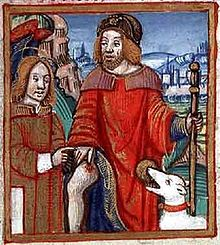

Anne's Page
I am a postgraduate student in the University of Verona Department of Linguistics. I work with Stefan Rabanus. My project focuses on the case systems of the Alto-Adige region, and Digital Humanities, in the spirit of which I am trying my hand on learning to build my own webpage through HTML5 and CSS.
Where to find me
During the week days I am usually in our 'gekraakte' co-working room, which will not be given up to the authorities without a fight! In the weekends, I try to go out into the nature/countryside/mountains as much as possible, if the weather permits. If not, I also enjoy wandering through nearly empty museums while being chased by bored supposts.
Favourite saints
- Saint Sebastian
- Saint Rochus
Things I enjoy doing in my free time
- Linguistics stuff
- Reading dictionaries
- Learning new languages (well starting to learn)
- Non-linguistics stuff
- Kayaking
- Hiking
- Generic third item (all things come in threes)
-
Top three things to do in Verona
- Walk along the City walls
- See the Arena
- Have Spritz on one of the squares